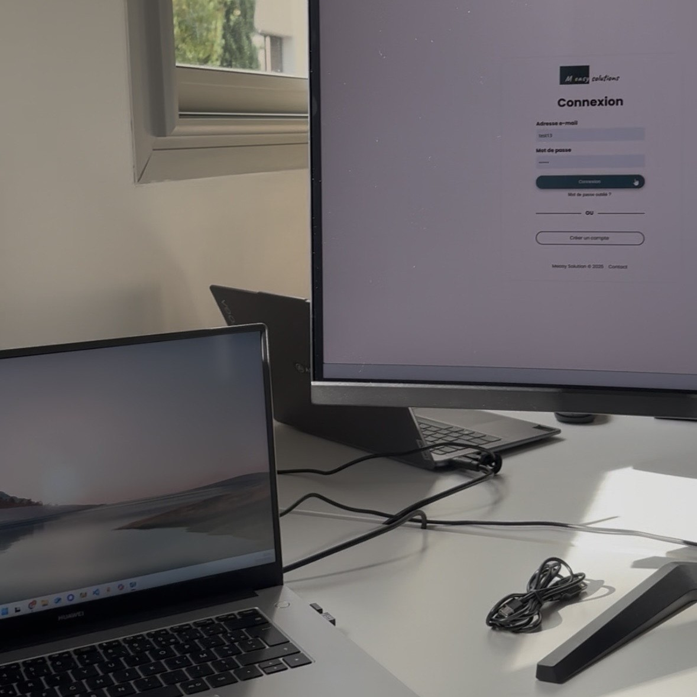
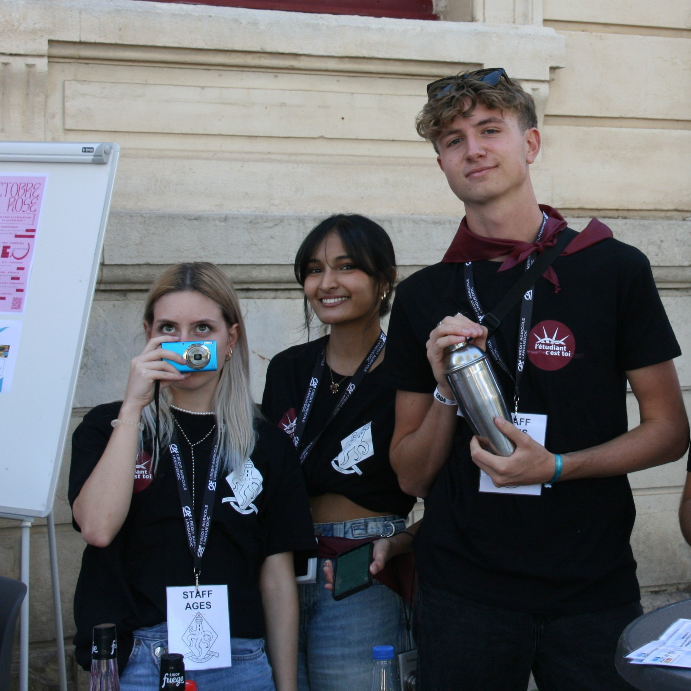
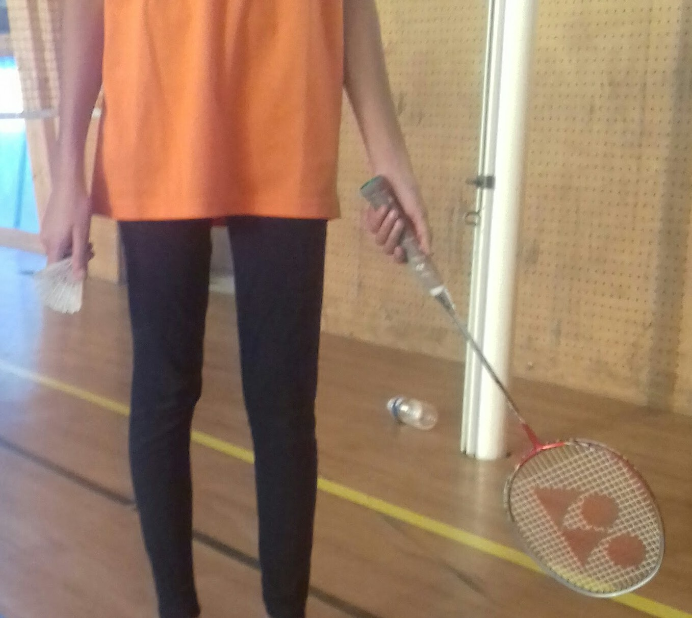
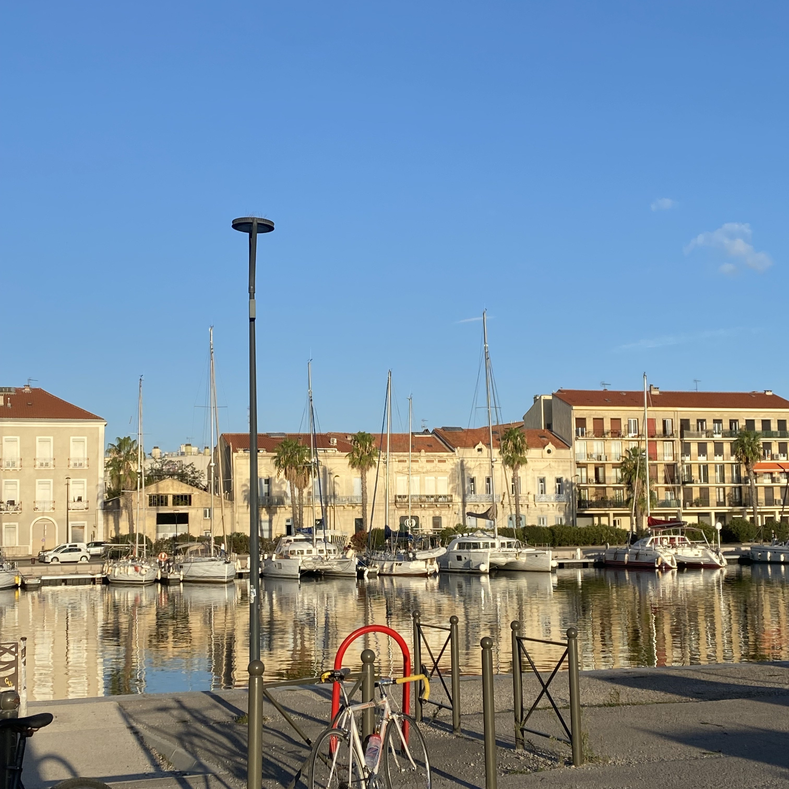

Découvrez mon monde en dehors du BUT informatique
En plus d'être développeuse je porte plusieurs casquettes. Alternante, déléguée de classe, secrétaire adjointe à l'AGES, marraine de 1ère et 2ème année, joueuse de ukulele et de piano, pratiquante de badminton depuis une dizaine d'année, effectuant une double diplomation de management. En somme, je fais plein de choses à côté du BUT.
Je profite donc de cette page pour vous parler de toutes ces choses que j'aime faire en plus de mes études principales.